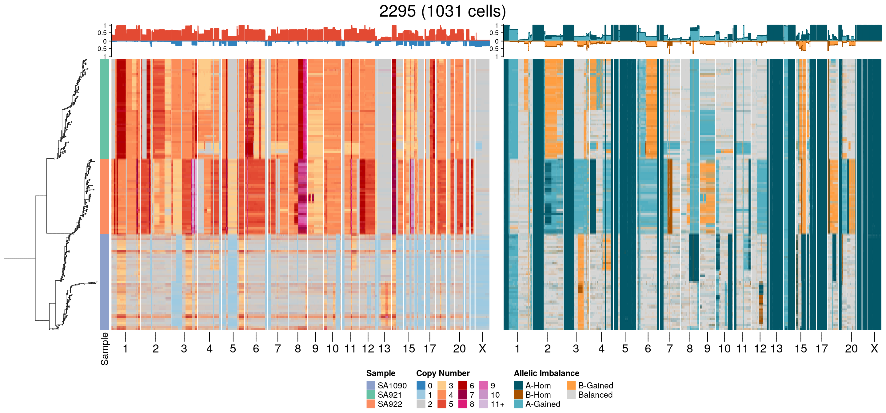
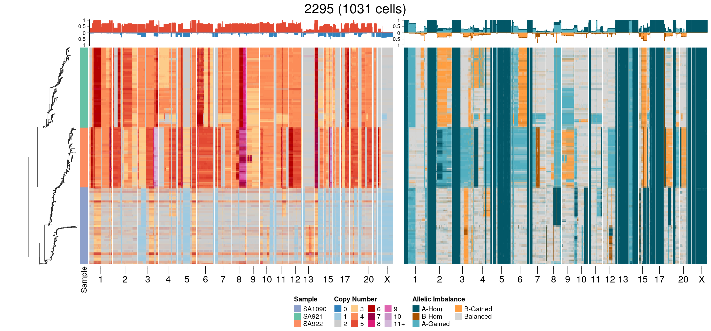

Section 3 Phylogenetic trees
3.1 Load data + packages
We’ll first load some packages and the data from the OV2295 cell lines.
3.2 Heatmaps
3.3 Sample 2295
[1] “2295”
3.4 Sample SA039
[1] “SA039”

We’ll first load some packages and the data from the OV2295 cell lines.
[1] “2295”
[1] “SA039”
